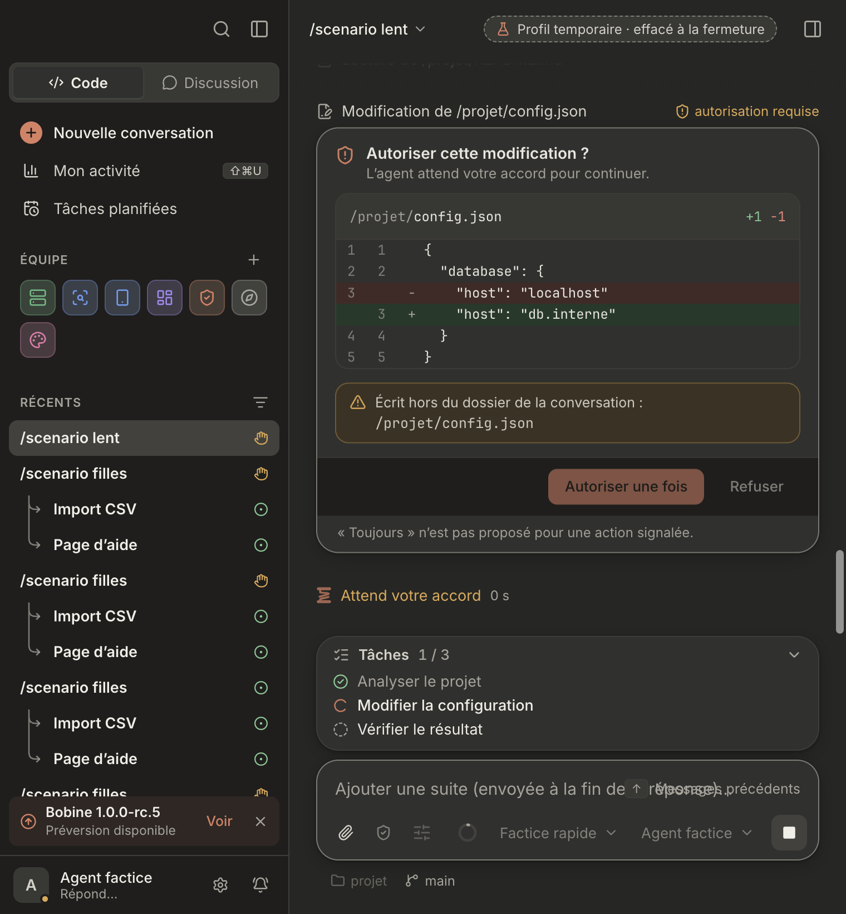
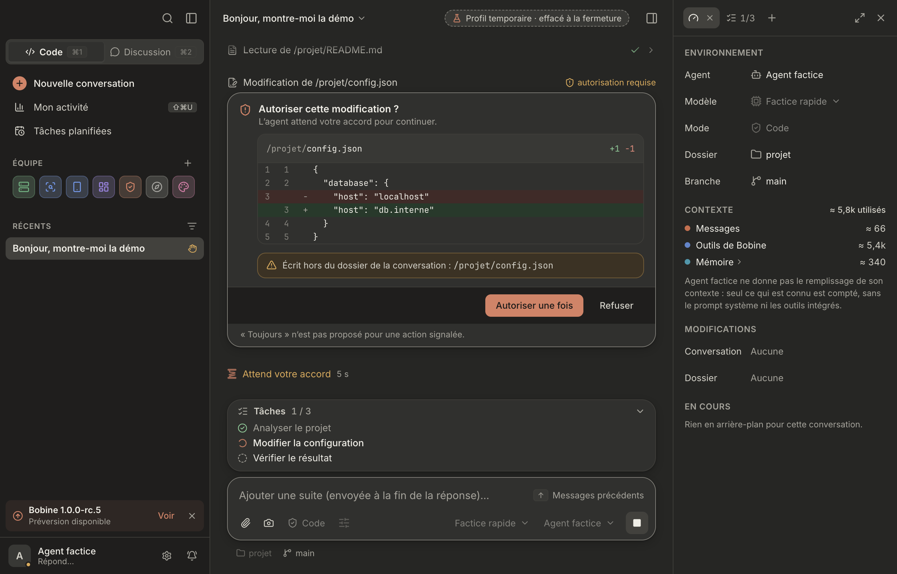

Défaut trouvé en recette avant la 1.0.0-rc.4. Pendant une réponse, la saisie vide
affiche l’invite longue « Ajouter une suite (envoyée à la fin de la réponse)… » ; le
rappel « ↑ Messages précédents » (SentHistoryHint,
sent-history.css) est posé en absolu à droite de la première ligne, sans
place réservée. Fenêtre à 760 px : les deux textes se chevauchent. À 1280 px avec le
panneau ouvert, il reste quelques pixels. Trois variantes, la recommandée en premier.
Rien n’est codé.
Largeurs des maquettes : la saisie d’une fenêtre à 760 px (≈ 450 px) et celle d’une fenêtre à 1280 px avec le panneau ouvert (≈ 610 px).


L’invite ne va jamais sous le rappel : la première ligne lui réserve sa largeur. Quand la saisie fait moins de ≈ 520 px, le rappel n’est plus que la touche ↑ (son nom reste en infobulle et pour les lecteurs d’écran) ; l’invite, sur une ligne, se coupe par « … » si elle ne tient pas.
container-type: inline-size)
et une marge droite réservée à l’invite ; rien de neuf côté React. Invite d’une ligne
avec « … » à vérifier sur un textarea (sinon l’invite peut passer sur deux
lignes : la saisie grandit d’une ligne, sans chevauchement).
Le rappel quitte la ligne de saisie et se pose sur la bordure haute, à l’endroit exact de la pastille qui montre la position pendant le parcours (« 2/5 · ↑ ↓ · Échap »). L’invite retrouve toute la largeur.
Le rappel ne s’affiche que s’il reste sa place après l’invite ; sinon il disparaît (la touche ↑ marche toujours). En pratique : présent avec « Répondre à l’agent… », absent pendant une réponse sur une saisie étroite.
| A (recommandée) | B | C | |
|---|---|---|---|
| Chevauchement | jamais | jamais | jamais |
| Rappel visible à 760 px | oui, « ↑ » seul | oui, complet | non |
| Invite entière à 760 px | coupée par « … » | oui | oui |
| Recouvre le fil | non | oui, de 12 px | non |
| Code | CSS seul | CSS, position à reprendre | mesure de l’invite |